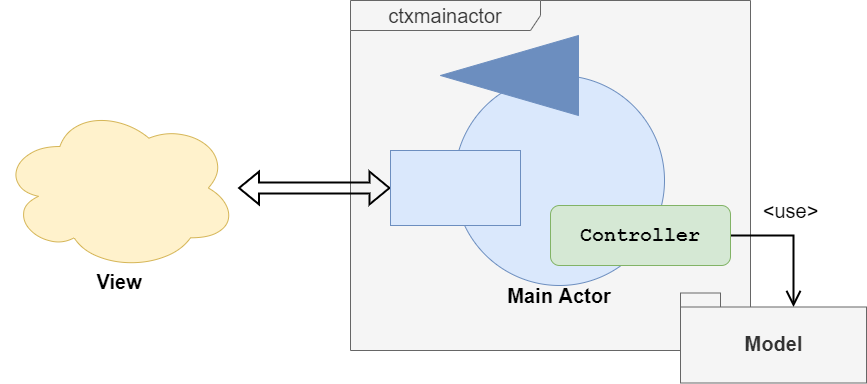

- Last Architecture and aim of this sprint
- Introduction
- Controller classes
- Testing
- Final results of this sprint
Last Architecture and aim of this sprint
Logical Architecture | Resources |
 |
Executable QAK Modelparkmanagerservice_2.2.qakTest FilesFirstTestPlan.java PersistenceTest.java TestMailNotifier.javaBasicdevice QAK Modelbasicdevice1.0.qakoBasicdevice Test Filesdevices_pytest.py |
In this sprint we are going to design a Controller that realizes the
Introduction
The controller that we are going to design realizes the business logic of the main server of the system.
Then, the APP-SERVER is one actor (or more that one) that can use this controller: we have introduced a sort of revisitation of the MVC design pattern (in distributed version) that we should call MVAC (Model-view-actor-controller): the main actor can receive all request from the GUI, then invoke the operation on the controller depending on the request. So, the the controller operate over the model that we have described in the SPRINT 3.

As we said, in our case, the GUI is realized by a web server , then it consists in a set of web pages and other web entities. We will define better how the gui is composed in a future sprint. However, the web server communicates with the main server thanks to the QAK interation methods (TCP, in this case). The APP-SERVER receives the request, then transit in the state designed for the relative type of request, and uses the controller to operate. The controller, in turn, operates on the Java Bean and the State Structure also using the Persistence Repository to persist the changes done.
We will also zoom into the APP-SERVER in the next sprint.
Controller classes
Package it.unibo.parkmanagerservice.controller
General view of the controller package
ParkManagerServiceController.kt and KParkManagerServiceController.ktThe ParkManagerServiceController is the main interface that defines the methods that the controller implementation |
ErrorType (inside ParkManagerError.kt)This enumeration defines a possible error returned by some method of the controller. Then:
|
ControllerBuilder.ktA simple Builder class in order to build and get the controller of the system. Obviously, this controller is also aParkingRepository.createBasics(< number of required slot >) |
ParkManagerError.ktA simple data class used for returning error after a method invocation. This class might not even be designed and exception could have been used instad, but Kotlin is a little bit difference from Java concerning exception (see Checked Expression). Then we decide to |
Zooming into the controller
In order to make a zoom into the controller strongly describing it, we decide to produce theGo to the KDoc related to the package it.unibo.parkmanagerservice.controller: KDoc
Go to the KDoc related to the class it.unibo.parkmanager.controller.ParkManagerServiceController: KDoc
The usages of the controller methods and his relation with the states of the APP-SERVER will be clarified in the next sprint.
Testing
The test of the ParkManagerServiceController is very delicate and need to test almost all methods of this class because it realizes the main business logic. To do testing, we have created this Junit Test Case:
ControllerTest.java
Final results of this sprint
Logical Architecture | Resources |
|
Executable QAK Modelparkmanagerservice_2.2.qakTest FilesFirstTestPlan.java PersistenceTest.java TestMailNotifier.javaBasicdevice QAK Modelbasicdevice1.0.qakoBasicdevice Test Filesdevices_pytest.py |
By students Names: Simone Mattioli , Luca Marchegiani Email: simone.mattioli6@studio.unibo.it , luca.marchegiani3@studio.unibo.it Git Repo: https://github.com/LM-96/ParkManagerService